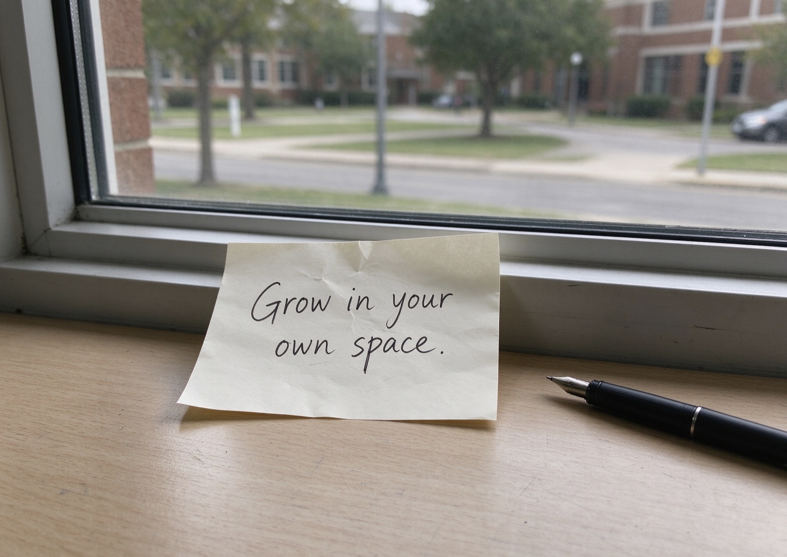

“Atrium” archives my inner-life stories as a personal digital retrospective, autumn 2026 — an autobiography and a reflection, I published where someone can answer.
Latest stories — hover to pause · click to read
Stories in full
What parts stay, what is left unsaid, and who will listen. Read it whole.
01 · Autobiography
On months of forcing myself to fit in, and learning to accept my quiet, inner world.
My inner atrium was quiet and unfinished. As a teenager, I carried many unspoken thoughts. School filled most of my days. I watched other people’s loud, bright lives and wondered how to arrange my own inner space.
Every day, I walked between classrooms and homework. I kept comparing my inner atrium to everyone else’s. I wished my mind could be more open, more energetic, more “perfect”. I tried to rebuild myself to match what I thought the world expected.
For nearly a year, I tried to act like someone louder and more outgoing. I forced myself to talk more, join noisy groups, and perform a version of myself that did not feel real. Every social gathering left me mentally drained. I paused before I joined in, afraid my true quiet self would not be good enough.
All that rebuilding grew tiring. I crowded my mind with other people’s standards. Instead of feeling brighter, I felt empty. Nothing felt truly like me. I fell into doubt. I worried there was something wrong with how my inner world was built.
I stopped pretending and started tending to my own atrium.
On the year I stopped tearing down my nature just to belong.
Because of that struggle, I stopped destroying my inner atrium to copy others. I began to observe what already lived within me: my quiet reflections, my small hopes, my simple personal motto, and all the lessons I picked up from ordinary school‑day moments.

Until finally, I understood. There is no universal blueprint for an inner atrium. It does not need to look like anyone else’s. My value comes from accepting the space that is mine.
And ever since then, I hold my motto close: Grow in your own space. I still visit the busy world outside. But I no longer destroy my inner atrium just to fit in. School continues to bring new challenges, yet I return to this quiet inner space to ground myself.
This post is the two‑minute version of that year, which means most of it is gone: the awkward conversations, the tired evenings, the small moments I tried to change myself. What is left is the shape — comfort, then the hole, then a different way of being with others.
I still pause before I join in. But now I pause for myself, not for anyone else.
Craft notes
The devices this post is built on, so the writing can be read as well as felt.
| Device | In the text | What it does |
|---|---|---|
| Dramatic question | “I wondered how to arrange my own inner space.” | Opens on a loss before explaining it. |
| Concrete number | “For nearly a year, I tried to act like someone louder and more outgoing.” | Specificity buys belief. |
| Economy | “Nothing felt truly like me.” | Three words carry a year. |
| Extended metaphor | “inner atrium,” returned to in every section | One image holds the whole argument together. |
| Repetition with a turn | “I still pause before I join in. But now I pause for myself.” | Returns to the opening image and reverses it. |
02 · Reflection
I wrote The Quiet Space I Built about learning to be at peace with myself amid noisy surroundings. Yet once I chose to share it, the story no longer belonged only to my private memory. It became a promise: to my younger self, to everyone who appears in the background of my recollections, and to every future reader.
As I revised my story, four gentle yet weighty ideas rose to guide my writing: consent, dignity, truth, care. I did not treat them like a checklist to hurriedly mark done. They were four quiet voices that kept pulling me back to reread every line with softer, sharper eyes.
Have I respected others before including them, even anonymously? A hidden name does not equal permission.
Do I portray these people as whole individuals, rather than mere scenery for my growth? Have I reduced them to a vague “loud crowd”?
Do I write from genuine personal feeling, or twist memories to polish my own narrative at others’ expense?
Have I considered how these words will land? Even without names, could someone recognise the moment and feel unexpectedly exposed?
In The Quiet Space I Built, I describe chasing group acceptance and growing exhausted, before choosing to protect my own quiet space. I omitted names, direct quotes and identifying details, and initially thought this was enough.
But anonymity is only a basic safeguard. The harder question is not whether they can be identified, but whether they should feature in my story at all. Drawing on shared moments from school life still borrows pieces of other people’s experiences. Before publishing, I must judge whether I represent them fairly.
It would have been easy to frame others as overwhelming or insensitive, true as that felt to me at the time. But that would only show my perspective and diminish theirs.
So I refocused the story inward. Instead of centring conflict between “them” and me, it follows my journey of understanding myself. Dignity means I do not turn other people into simple foils to make my growth look clearer.
A story that makes my journey feel clear and neat can still shrink someone else’s.
Autobiography condenses messy life into concise prose. This compression risks turning my subjective feelings into the definitive truth about other people.
I kept asking myself if I prioritised honest recollection, or just elegant, memorable phrasing. A well-written sentence is unfair if it oversimplifies another person’s reality. My simple test: would the people in this memory feel fairly represented if they read this? I cannot guarantee their reaction, but I tried my best.
Care shows in small editing decisions: cutting specific conversations, softening judgemental remarks, removing recognisable clues. These are not weaknesses in the story; they are acts of responsibility.
Readers could be tutors, classmates or strangers, all bringing different perspectives. Words that feel liberating to me might hurt someone else. To write with care is to assume the people in the background may one day read this.
These four ideas were never strict rules. They taught me to read my writing humbly and slowly.
Consent reminds me anonymity does not erase a person’s presence in my words. Dignity warns against flattening others to simplify my own story. Truth tells me my experience is just one thread in a larger story. Care reminds me publishing transforms private memory into public text.
This autobiography is a promise to myself. That promise only holds meaning if it honours the people tangled in my past. My quiet space feels honest not because I shared everything, but because I carefully chose what to leave out.
About this blog
Both posts explore digital storytelling. I set out to share a quiet personal story, and learned that an honest voice comes with responsibility. I only grasped this while editing my own memories.
The first is my autobiography, The Quiet Space I Built. The second is my reflection on publishing memories that include other people. Neither is finished, yet both are public. That is the point.
Ask first
Consent before including others. Even unnamed people deserve consideration, and the right to be left out.
See them fully
Dignity in every line. I will not reduce others to simple backdrops for my own growth.
Speak my truth
My perspective is partial. I honour the complexity of what happened, rather than polishing a neat narrative.
Publish with care
Write assuming they might read it. Every edit is an act of respect for those who appear in my memories.
Course
COURSE LAC23721 · Innovat' Digital Communication · Session 07 — Use of Digital Storytelling. Typefaces: Archivo, Fraunces, Inter (SIL OFL). Images are placeholders pending the author's own photographs.